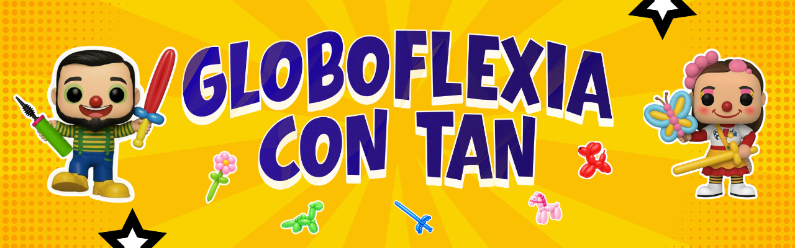

Globoflexia con Tan Barbudo 🎈
Aprende paso a paso y diviértete creando figuras increíbles

Alumno
Progreso
0 de 0 vistos
Video
Selecciona un video de la lista, míralo completo y luego marca cuando ya lo hayas visto para llevar tu avance.
Selecciona un video
Aquí verás la descripción del video elegido.